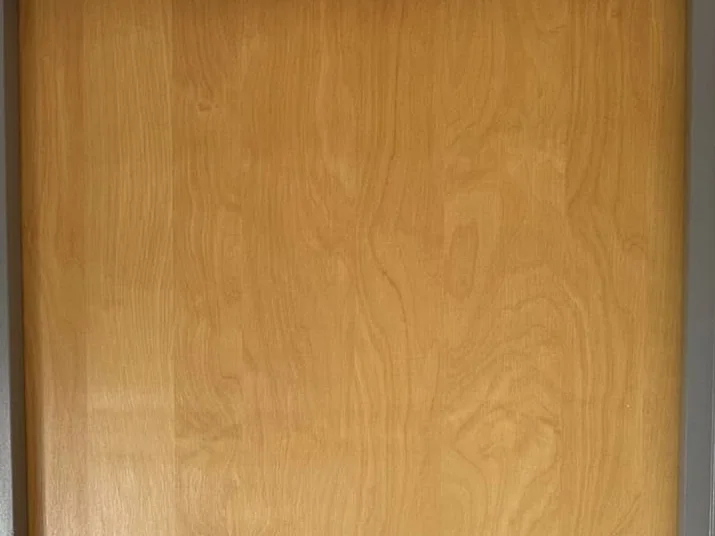
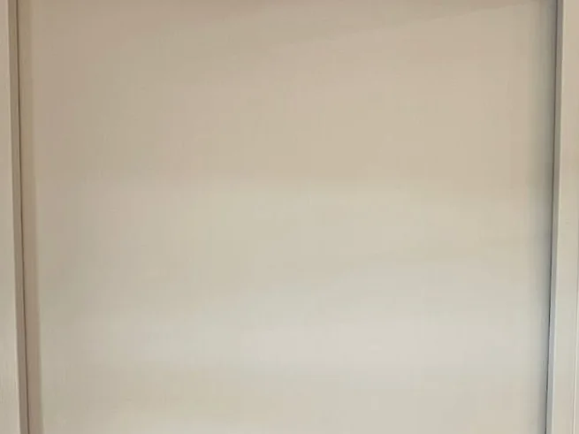

Kozijnen en deuren schilderen in Westervoort en omgeving
Buitenkozijnen, voordeuren, binnendeuren en ander houtwerk. Eerst het hout in orde, dan een strakke laklaag.

Waar de uren in gaan zitten
Bij kozijnen en deuren ziet u elk foutje: een druppel, een streep, verf op het glas of op het beslag. Daarom gaat de meeste tijd naar de voorbereiding: oude lak schuren of verwijderen, beschadigingen herstellen, glas en beslag strak afplakken. Buiten komt daar houtrot bij, dat eerst hersteld wordt. Pas dan gaan de grondverf en de lak erop.
- Buitenkozijnen, ramen en boeidelen
- Voordeuren, achterdeuren en binnendeuren
- Houtrot herstellen voordat er lak op gaat
- Glas en beslag strak afgeplakt
Eigen werk
Een binnendeur, voor en na
Van houtlook naar strak gebroken wit. Sleep de lijn om het verschil te zien.


Voor NaVoor de aanvraag
Wanneer is het tijd voor nieuwe lak?
Buitenkozijnen en voordeuren
Zodra de lak dof wordt, gaat scheuren of op de onderdorpels loslaat. Buiten gaat het snel als er eenmaal water achter de verf komt.
Binnendeuren en kozijnen
Als de lak geel is geworden, beschadigd is rond de klink, of als er een andere kleur moet, bijvoorbeeld van houtlook naar wit.
Bij een verkoop of verhuizing
Kozijnen en de voordeur ziet iemand als eerste. Nieuwe lak maakt daar veel verschil.
Waar u zelf op kunt letten
- Lak die bladdert op onderdorpels en in de hoeken
- Hout dat zacht aanvoelt of donker is verkleurd
- Open naden tussen het kozijn en het glas of de muur
- Gele of doffe lak op binnendeuren en kozijnen
- Een deur die klemt doordat er te veel lagen op zitten
Herkent u iets hiervan? Stuur een foto, dan zeg ik wat er nodig is.
Advies bij het kijken
Welk materiaal, en waarom
Welke verf of welk behang het wordt, hangt af van de ruimte en de ondergrond. Dit zijn de keuzes die meestal voorbijkomen.
Grondverf
Op kaal of hersteld hout, zodat de lak goed hecht.
Lak voor binnen en buiten
Buitenlak moet tegen zon en regen kunnen. Binnen vergeelt een watergedragen lak minder.
Houtrotvuller of nieuw hout
Voor aangetaste plekken in kozijnen en onderdorpels, voordat er lak op gaat.
Geen prijslijst
Waar de prijs van afhangt
Een prijs noemen zonder te kijken zou gokken zijn. Dit zijn de dingen die het verschil maken.
- Het aantal kozijnen en deuren
- Binnen of buiten, en hoe goed alles bereikbaar is
- Hoeveel houtrot er hersteld moet worden
- Of de oude lak geschuurd of helemaal verwijderd moet worden
- Een kleurwissel, bijvoorbeeld van donker naar wit, vraagt meer lagen
Benieuwd wat dit bij uw woning kost? Ik kom vrijblijvend kijken.
Vijf stappen
Het meeste werk zit in wat u later niet ziet
Goed schilderwerk begint bij een goede ondergrond. Schuren, gaatjes dichtzetten en afplakken kosten de meeste uren, en precies daar zit het verschil tussen twee jaar mooi en tien jaar mooi.
 01
01U stuurt foto's of belt
Een paar foto's van de ruimte of het kozijn zeggen vaak al genoeg. Zet erbij wat u wilt en wanneer het ongeveer zou moeten.
 02
02Ik kom langs en kijk
Ik bekijk de ondergrond, de staat van het hout en hoeveel voorbereiding er nodig is. Daar zit vaak meer werk in dan mensen denken.
 03
03Een offerte met de voorbereiding erin
Op papier staat wat er gebeurt: schuren, gronden, lakken. Zo ziet u waar de uren in gaan zitten en waarom.
 04
04Uitvoeren
Afdekken, afplakken, schilderen. U hoort vooraf wanneer ik begin en of u thuis moet zijn.
 05
05Opruimen en samen nalopen
Tape eraf, spullen terug, afval mee. Aan het eind lopen we het werk samen na.
5,0 uit 31
Wat klanten op Werkspot schrijven
Letterlijk overgenomen, met het soort werk en de plaats erbij.
De deuren en kozijnen zijn prachtig hersteld en voorzien van een mooi kleurtje. Aan te raden.
Klant uit HuissenBuitenschilderwerk, 10 jul 2026
Ahmad is een vakman. Komt afspraken na en werkt zeer netjes.
Cindy, WestervoortBuitenschilderwerk, 13 jun 2026
4 stuks
Vragen over kozijnen en deuren schilderen
Ja. Verf over rot hout is weggegooid geld. Aangetast hout haal ik weg en herstel ik voordat er gegrond wordt. Zit er te veel in, dan hoort u dat bij het kijken en niet pas als het werk al loopt.
Dat hangt af van de oppervlakte, de staat van de ondergrond en hoeveel voorbereiding er nodig is. Twee kamers van dezelfde maat kunnen flink verschillen, puur door wat eronder zit. Daarom kom ik eerst kijken en noem ik pas daarna een prijs.
Dat hangt af van de ruimte en de ondergrond. In een badkamer of keuken is een andere verf nodig dan in een slaapkamer. Ik denk mee over materiaal en kleur, de keuze blijft aan u.
Op het Werkspot-profiel staat dat Aribouw garantie biedt. Hoe lang en waarop precies, staat in de offerte, zodat u het vooraf zwart op wit heeft.
4 andere diensten
Vaak in dezelfde klus
Binnenschilderwerk
Wanden, plafonds, deuren, kozijnen en trappen. Strak afgeplakt en netjes achtergelaten.
Wat dat inhoudtBuitenschilderwerk
Kozijnen, deuren, boeidelen en ander buitenhout. Eerst het hout in orde, dan pas verf.
Wat dat inhoudtBehangen
Behang, renovlies en glasvezel. Oud behang gaat er eerst af.
Wat dat inhoudtHoutreparaties en onderhoud
Houtrot herstellen, een deur die klemt, klein onderhoud. Het werk dat vaak bij schilderwerk hoort.
Wat dat inhoudtLaat mij er even naar kijken
Aan het langskomen en de offerte zitten geen kosten. U hoort wat er nodig is en wat kan blijven.
Ik bel u om een moment af te spreken. Stuur gerust alvast een paar foto's van de ruimte, dan kan ik meteen meedenken. In deze voorbeeldpagina gaat er nog niets echt de deur uit.
Liever meteen contact
Bel of app mij gerust. Een paar foto's van de ruimte zeggen vaak al genoeg om te weten waar het over gaat.
- Telefoon
- 06 83 04 41 91
- 06 83 04 41 91
- aribouw10@gmail.com
- Adres
- Mommenkamp 27, 6932 HT Westervoort
- Werkgebied
- Westervoort, Arnhem, Nijmegen en omgeving
- Reviews
- 5,0 op Werkspot